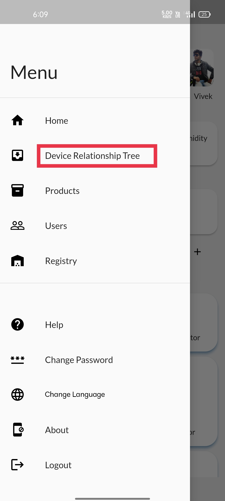
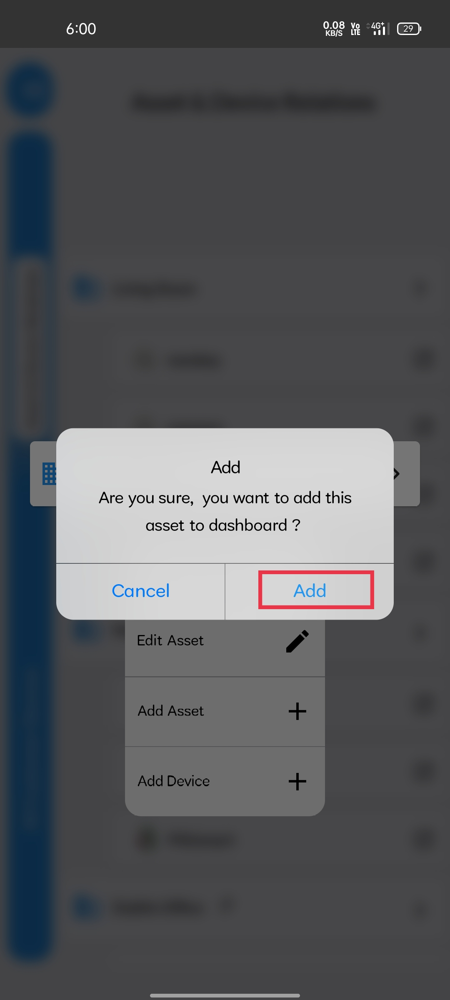
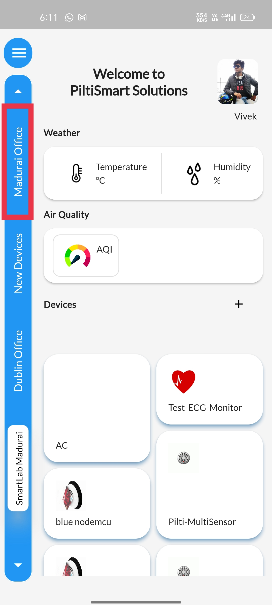

STEP 1Pinned assets will be displayed in the side panel & You can notice the asset balarengapuram at the top |
 |
STEP 1aAnd for the demo purposes we are going to pin &the madurai office asset to the side panel at the top |
 |
STEP 2Click the dashboard button. |
 |
STEP 3Select the device relationship tree option available |
 |
STEP 4You can notice the assets "Madurai Office" which is not pinned yet,&and the asset "Balarengapuram" which is pinned,& The assets with the pin symbol next to it are pinned assets |
 |
STEP 5We are going to unpin the "Balarengapuram" asset and pin the "Madurai Office" asset& Long press the "Madurai Office" asset, a pop will appear as shown in the image displayed.& click on pin to dashboard option available given below, to pin the asset. |
 |
STEP 6
Click on the "add" option, displayed. |
|  |
STEP 7 A confirm message will be displayed |
 |
STEP 8To unpin the "Balarengapuram" asset,& Long press the "Balarengapuram" asset, a pop will appear as shown in the image displayed.& click on unpin from dashboard option available given below, to unpin the asset |
 |
STEP 9Click on the "add" option, displayed. |
 |
STEP 10A confirm message will be displayed |
 |
STEP 11You can either navigate to the home page via& the "home" option available in the dashboard menu& If you have hit the back button to get to home page,& you need to refresh the home page as shown in the image to get the pinned asset reflected |
 |
STEP 12You can notice, "Balarengapuram" asset is replaced and& the newly pinned asset "Madurai Office" is displayed at the top of the dashboard |
|  |